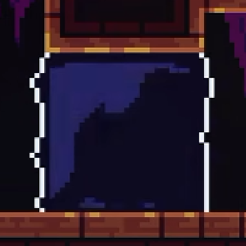
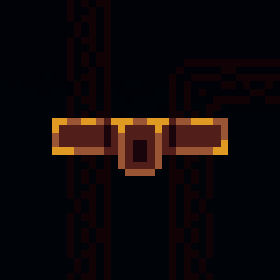
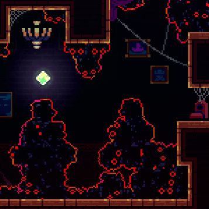
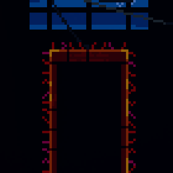
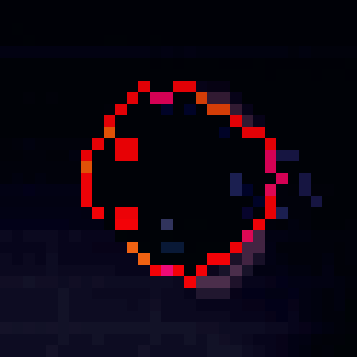
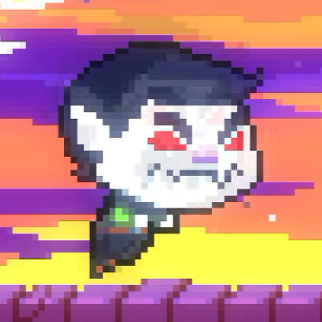

Mulli laadsed plokid, mis nõrgalt põrgatavad mängija tagasi, kui ta puudutab plokki. Ainuke viis kuidas saada nendest lahti, on sooritada erinevaid ülesandeid, mis on tasemes.
Püüdes läbida mahajäetud mõisavaldust, teeb Madeline kõrvalepõike ning kohtab seal enamat kui vaid tolmu ja kaja.

Mulli laadsed plokid, mis nõrgalt põrgatavad mängija tagasi, kui ta puudutab plokki. Ainuke viis kuidas saada nendest lahti, on sooritada erinevaid ülesandeid, mis on tasemes.

Platvormid, mis hakkavad alla langema, kui mängija seisab selle peal. Kui lahkuda platvormilt, hakkab platform tagasi üles, oma algsesse positsiooni liikuma.

Must ja punane muda laadne läga, mis tapab mängija kui ta puudutab seda. Tavaliselt on kas platvormi või objekti küljes.

Punased kombitsad, mis tulevad platvormi või objekti küljest välja. Kui mängija puudutab neid, siis asendatakse need lägaga. Kui mängija läheb läbi kombitsate ala, toimub vahetus koheselt, aga kui mängija ei liigu kombitsate alal, toimub vahetus hetke pärast.

Läga laadne, liikuv oht, mis tapab mängija kui ta puudutab seda.

Härra Oshiro on kummitus, kes hakkab jälitama mängijat ja proovib talle sisse joosta. Mängija sureb kui puudutab teda eest või tagant, aga mängija saab ka hüpata ta pea peale, mis töötab samamoodi nagu vedru.